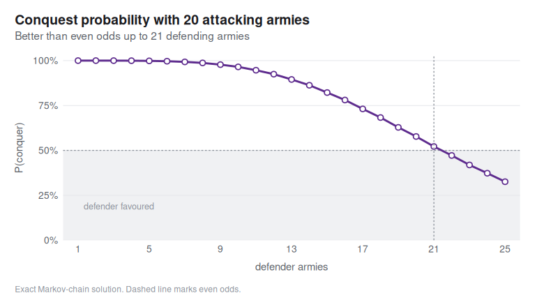
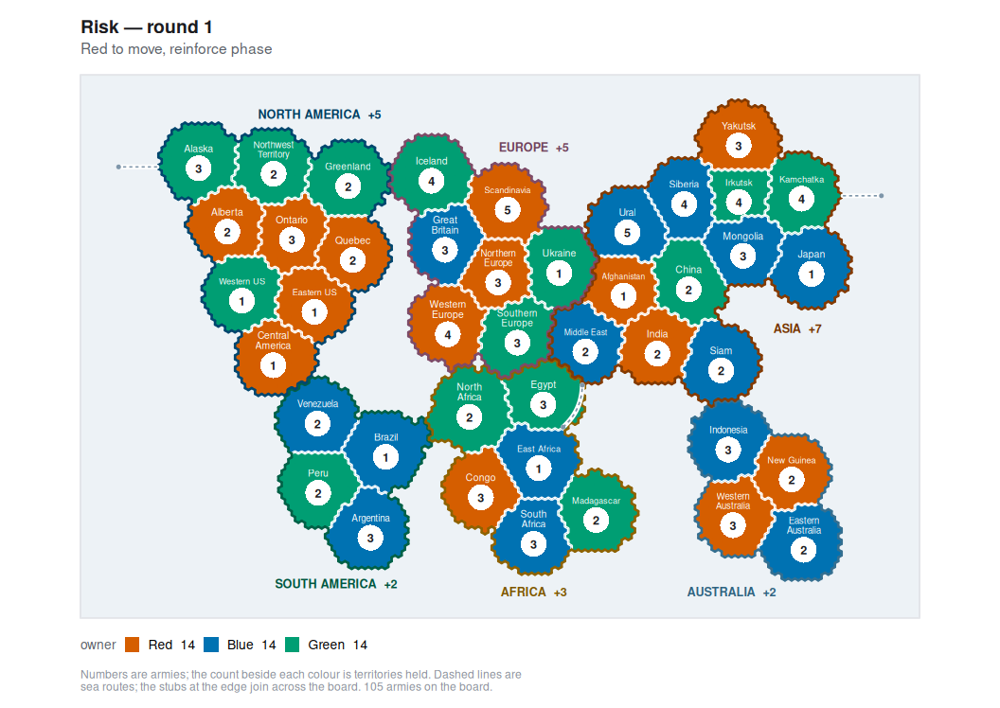

Simulate, analyse and play the board game Risk (German Risiko) in R: the exact dice-combat engine, battle and whole-game simulators, a scriptable game model with AI agents, a ggplot2 map layer, and an interactive Shiny app.
The dice
The attacker rolls up to three dice, the defender up to two, and the highest dice are compared pairwise. The attacker wins a pair only by rolling strictly higher — ties go to the defender. Every outcome is enumerated exactly, never simulated:
library(risikoR)
rk_duel_dist(3, 2)
#> # A tibble: 3 × 5
#> n_att n_def att_loss def_loss p
#> <int> <int> <int> <int> <dbl>
#> 1 3 2 0 2 0.372
#> 2 3 2 1 1 0.336
#> 3 3 2 2 0 0.293
rk_duel_odds(3, 2)
#> # A tibble: 1 × 8
#> n_att n_def e_att_loss e_def_loss sd_loss p_att_wins_all p_def_wins_all
#> <int> <int> <dbl> <dbl> <dbl> <dbl> <dbl>
#> 1 3 2 0.921 1.08 0.811 0.372 0.293
#> # ℹ 1 more variable: p_split <dbl>The battles
rk_battle() fights a territory out; rk_battle_odds() gives the win probability either by Monte Carlo or by solving the Markov chain exactly.
set.seed(1)
rk_battle(10, 8)
#> <rk_battle> territory conquered after 8 duels
#> Attacker: 3 left · Defender: 0 left
rk_battle_odds(10, 8, method = "exact")
#> # A tibble: 1 × 7
#> att_armies def_armies method n p_conquer e_att_survivors e_def_survivors
#> <int> <int> <chr> <int> <dbl> <dbl> <dbl>
#> 1 10 8 exact NA 0.646 4.05 1.23An attacker needs roughly a 5-to-4 advantage for even odds:
rk_plot_conquest(20, def_range = 1:25, method = "exact")
The game
rk_game() deals the classic 42-territory board; the turn cycle is rk_reinforce() -> rk_attack() -> rk_fortify() -> rk_end_turn(), and every one of them returns a new game rather than modifying the old one.
game <- rk_game(c("Red", "Blue", "Green"), seed = 1)
game
#> <rk_game> 3 players on 42 territories, round 1
#> Turn: Red (reinforce phase)
#> * Red: 14 territories, 35 armies, 0 continents
#> Blue: 14 territories, 35 armies, 0 continents
#> Green: 14 territories, 35 armies, 0 continents
rk_plot_map(game)
The agents
rk_ai() builds a policy, rk_play() runs a whole game and rk_tournament() compares strategies over many games.
The app
Four tabs: play against the agents on a clickable map, analyse a single duel, simulate battles against the exact solution, and run tournaments in the strategy lab.
Learn more
-
vignette("risikoR")— the guided tour - Playing a game
- The probability of Risk